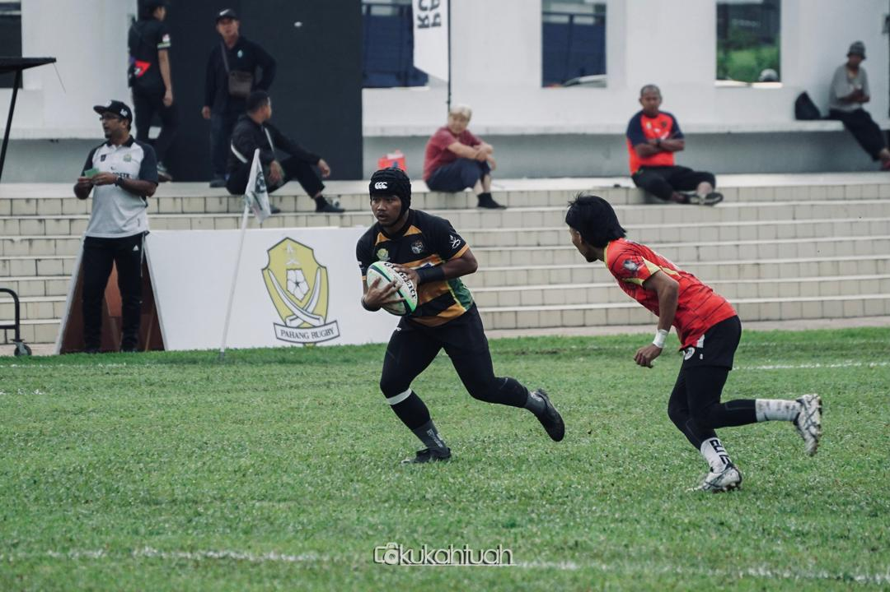
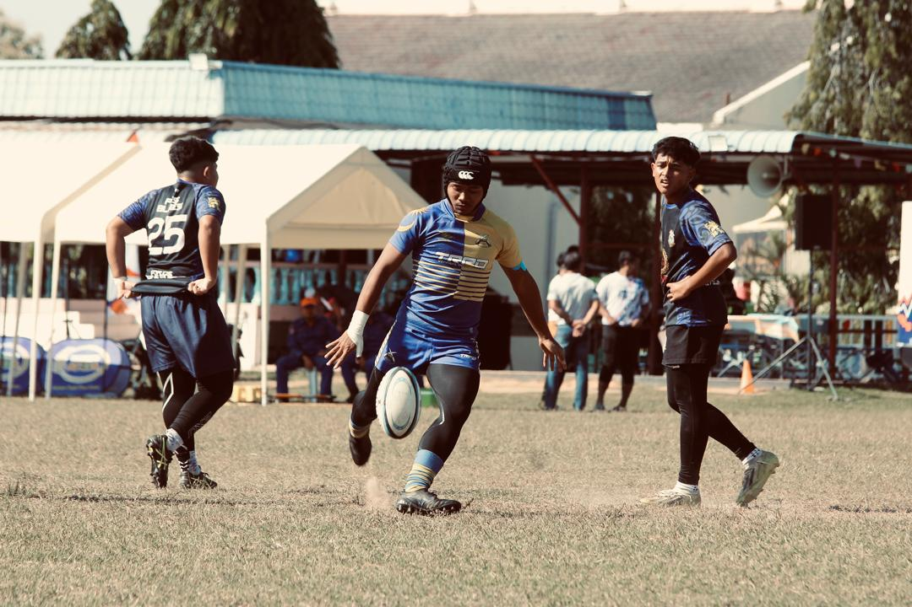

I started playing rugby since 2018 till now, because I love teamwork, discipline, and physical challenge. There's too many injury i've got from this sport but I never give up because I know that every injury is a lesson and an opportunity to grow stronger. Rugby has helped me build confidence, strength, and leadership skills on and off the field. By the way, My first sport isn't rugby, I started with football but I switched to rugby because I found it more exciting and rewarding.


What a big Thanks to this sport because teach a lot in so many things. Through training and matches, I learned how to work under pressure and support my teammates.